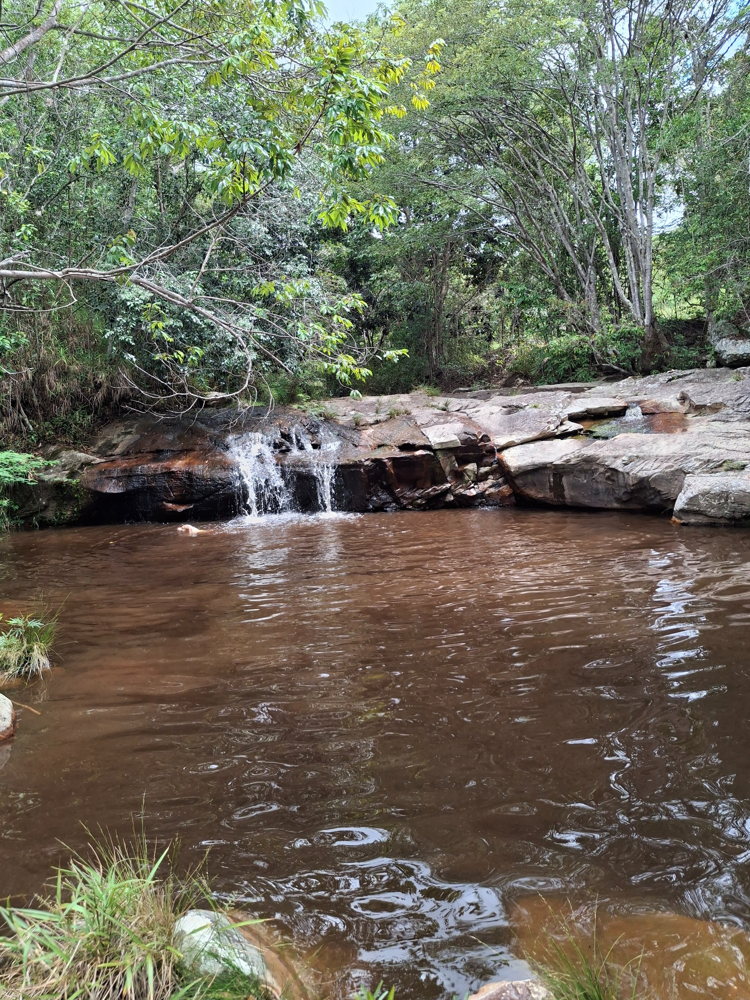
01 / PAUSA NA NATUREZAPocinhos do Rio Fundão
O guia indica pequenos poços abaixo do chalé, a cerca de cinco minutos a pé. Confirme com a equipe os pontos de acesso e as condições da água antes de sair.
ESCOLHA O SEU RITMO
Da pausa nos pocinhos às trilhas e aos encontros culturais: possibilidades para seus dias na região.

PERTO DO CHALÉ

01 / PAUSA NA NATUREZAO guia indica pequenos poços abaixo do chalé, a cerca de cinco minutos a pé. Confirme com a equipe os pontos de acesso e as condições da água antes de sair.
02 / PAISAGEM DA ESTADIADentro do terreno do Instituto Torus, a Cachoeira do Fundão compõe a vista da Cacau House. Com mais de 200 metros, é a maior cachoeira da região da Raposa e pode fazer parte de um passeio guiado. Combine com um guia local o acesso, o trajeto e o tempo total da visita.
Encontrar um guia →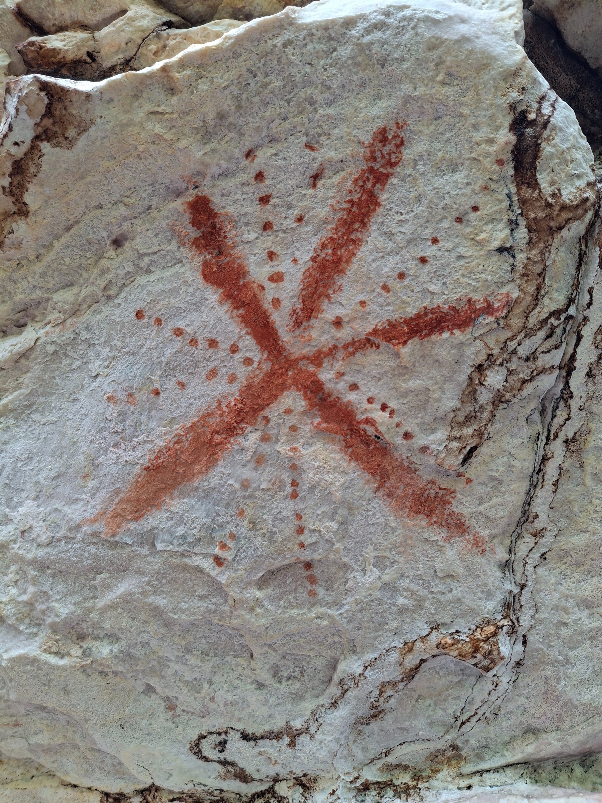
03 / MEMÓRIA DO TERRITÓRIOConheça os paredões da região com um guia. O percurso citado no guia original não possui sinalização. Preserve o patrimônio: observe sem tocar ou interferir nas pinturas.
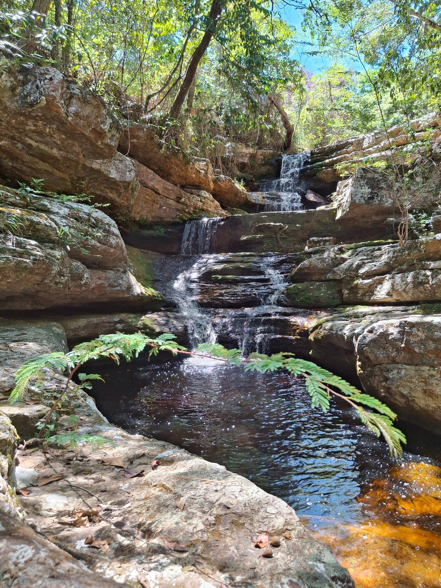
04 / OUTRA VISTA DA RAPOSAO guia sugere conhecer pequenas cachoeiras e o projeto agroflorestal da Pousada da Raposa. Combine a visita previamente pelo Instagram.
@pousadadaraposa ↗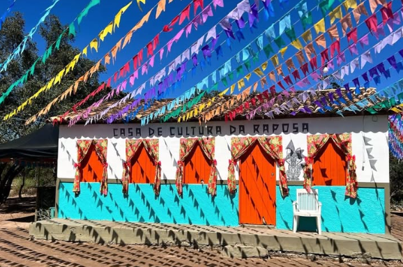
05 / ENCONTROSConsulte a agenda da Casa de Cultura da Raposa para conhecer os encontros, oficinas e eventos da comunidade.
Conhecer a comunidade →O guia indica o BikeLodge para consultar aluguel de bicicletas e passeios guiados. Confirme atendimento, roteiros e equipamentos antes de programar.
@bikelodge ↗PASSEIOS SAINDO DA RAPOSA
Escolha seu passeio pelo tempo de deslocamento e pelo ritmo da trilha. Licuri e Raízes ficam no mesmo local; Buracão e Fumacinha são acessados no sentido de Ibicoara, enquanto Andorinhas fica no sentido de Iramaia.
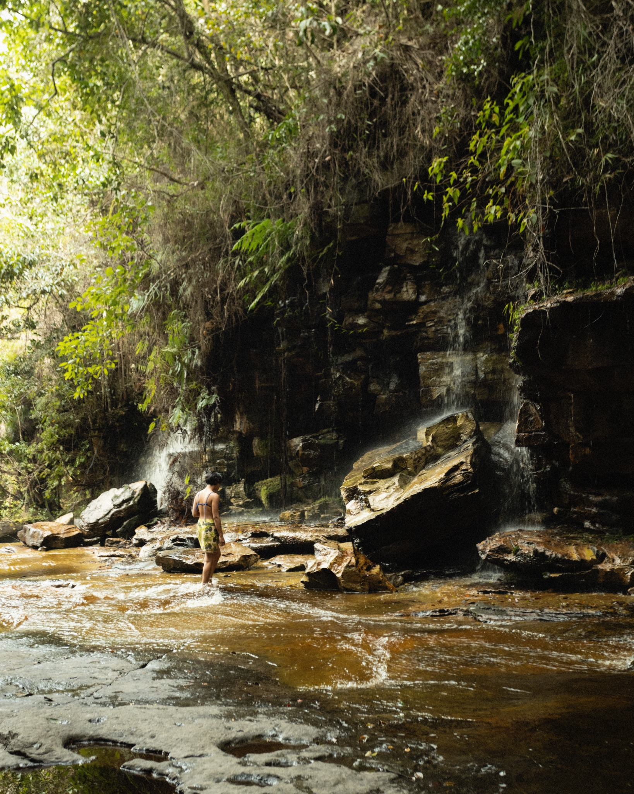
Raízes e Licuri ficam no mesmo local e podem fazer parte do mesmo passeio. Saindo da comunidade da Raposa, siga em direção a Ibicoara e combine a visita com um guia local.
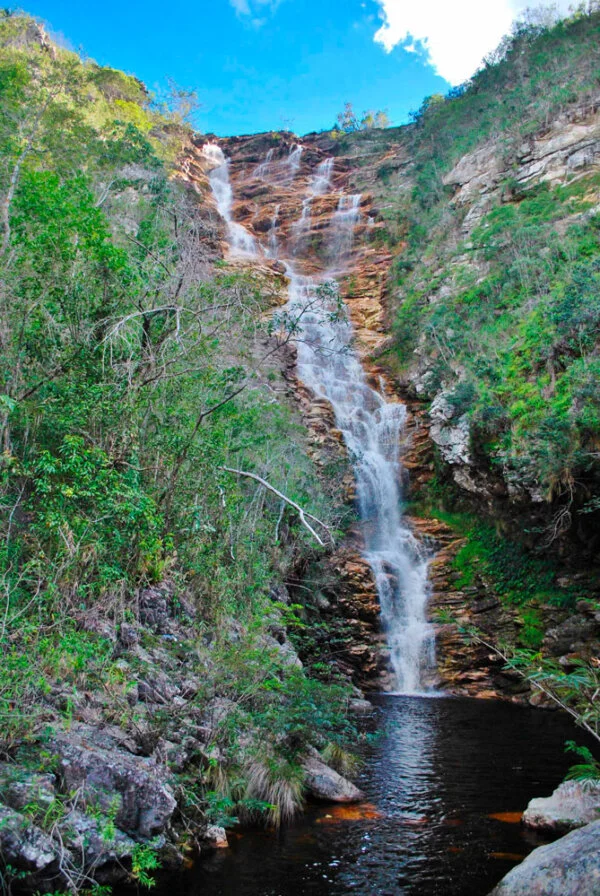
Uma parada para conhecer junto com a Cachoeira das Raízes. As duas estão no mesmo local, a cerca de 20 minutos da comunidade da Raposa, no sentido de Ibicoara.
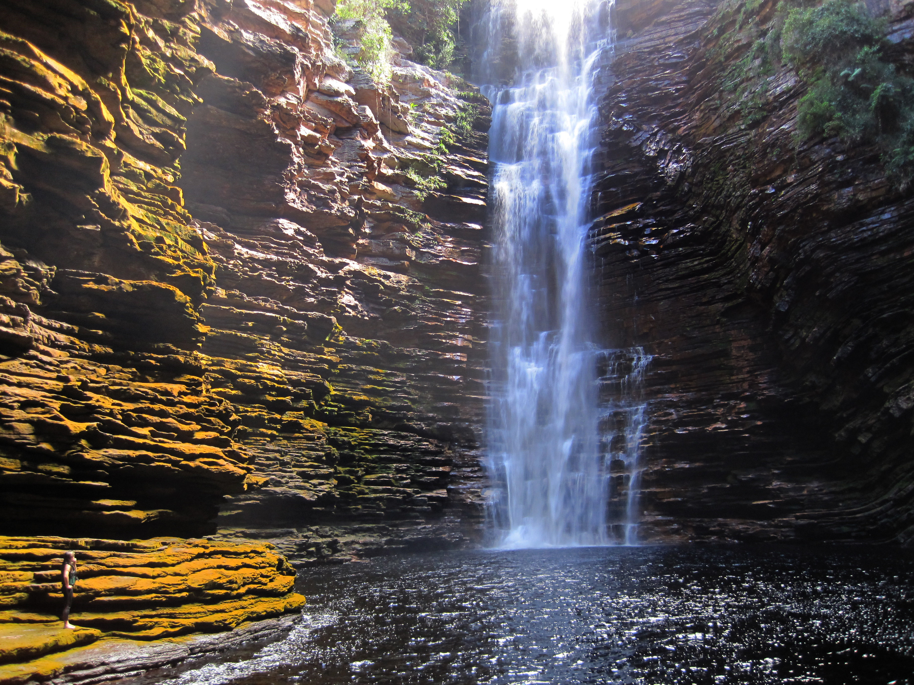
Uma opção mais indicada para crianças e famílias, com uma trilha de nível fácil a moderado. Planeje o passeio com um guia e confirme os detalhes do percurso.
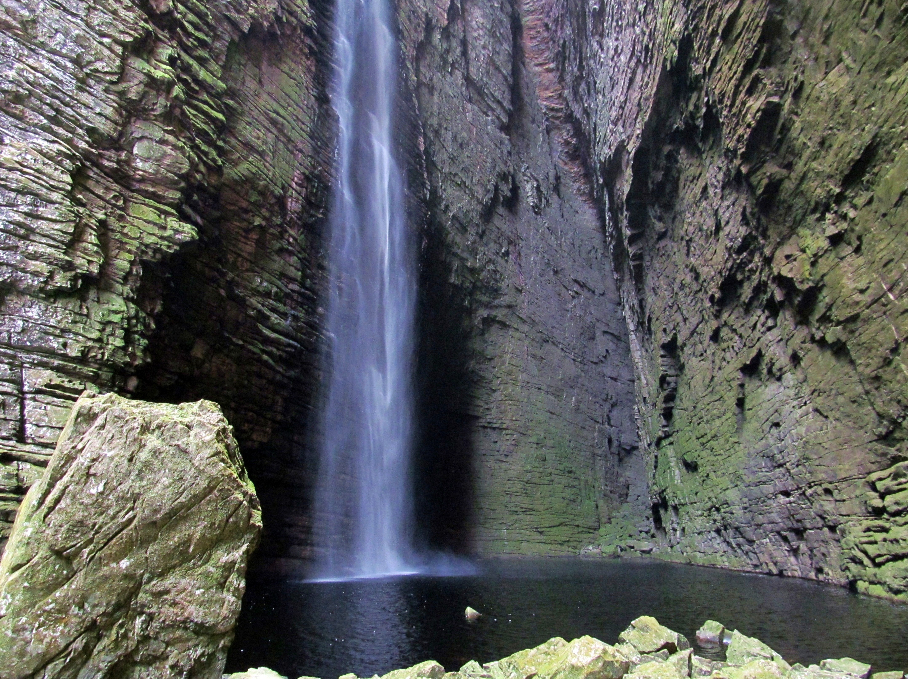
Um roteiro de trilha difícil, para quem procura uma caminhada mais exigente. Converse com o guia sobre o preparo necessário, a duração total e as condições do percurso.
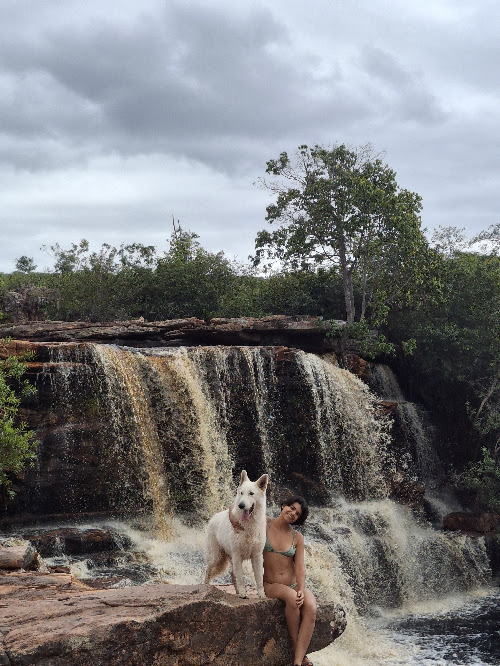
Sem necessidade de fazer trilha para chegar, é uma opção de passeio para diferentes públicos e para quem busca um acesso mais simples à cachoeira.
Os tempos de deslocamento de carro são aproximados, a partir da comunidade da Raposa, e variam conforme as condições da estrada. Combine os detalhes das trilhas e da visita com um guia local.
Falar com os guias da região ↗ARTE, CULTURA E MOVIMENTO
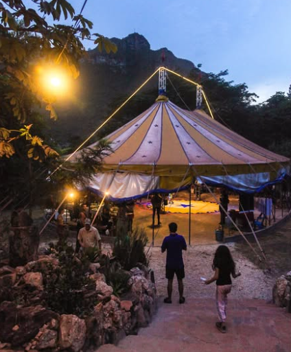
CULTURA E ENCONTROS
Espaço na Estrada das Cachoeiras com apresentações circenses, feiras e eventos. Acompanhe a programação antes da visita.
@circoredondo ↗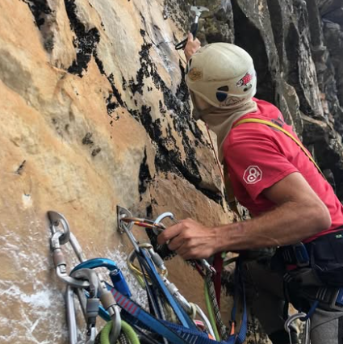
ESCALADA
Projeto em Campo Redondo com atividades de escalada. Consulte a equipe sobre aulas, vias, acompanhamento e equipamentos.
@familia_x_chapada_diamantina ↗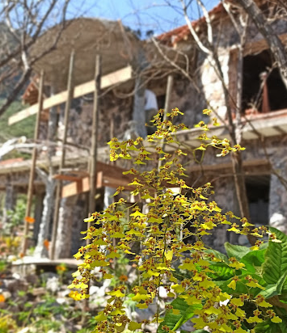
ARQUITETURA E PAISAGEM
Também conhecido como Museu de Pedra, em Campo Redondo. Confirme horários, acesso e condições de visita pelo perfil.
@museu_igaracu ↗Confirme as condições do tempo, da água e das trilhas com a equipe local. Leve água, alimentos, proteção solar, repelente e calçados adequados ao percurso. Respeite as propriedades e os espaços culturais. Tudo o que você levar para a natureza deve voltar com você.
Seu tempo aqui começa com cuidado.
Próxima página: Boas-vindas →